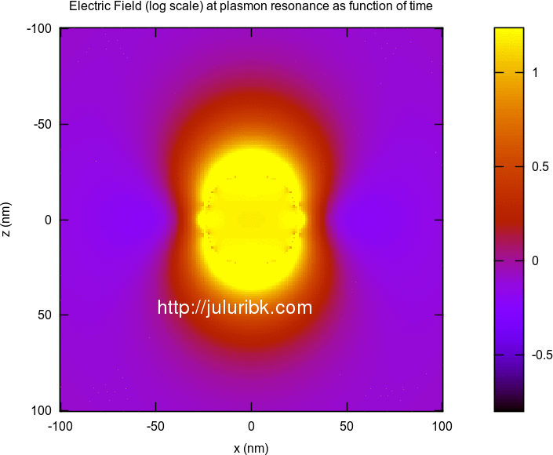
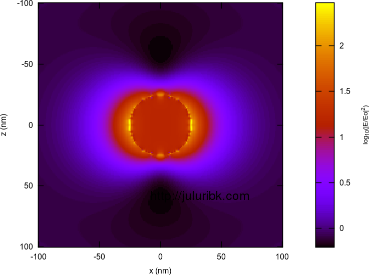
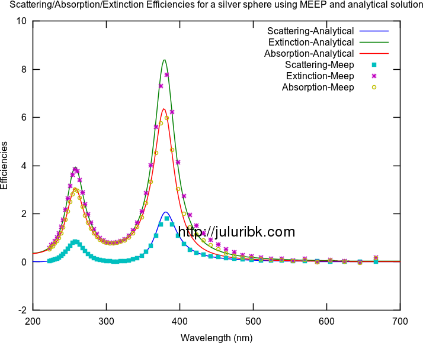
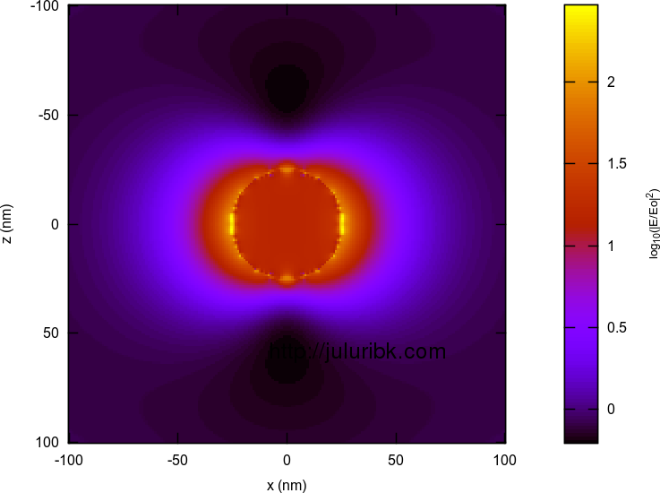
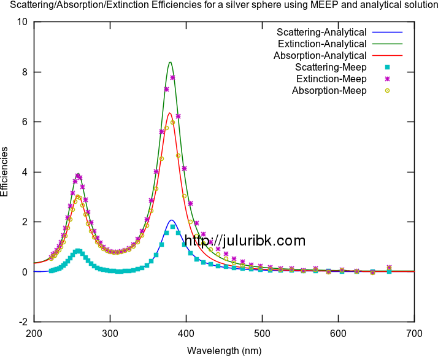
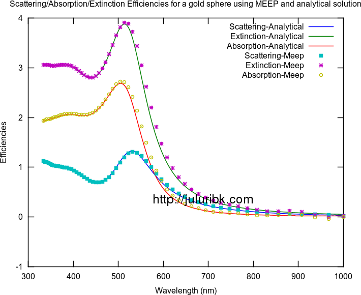

- Tue 22 January 2013
- Plasmonics
- #electromagnetism, #FDTD, #MEEP, #Plasmonics
This article is about simulating localized plasmon resonances in metal nanospheres using MEEP package. Generally, I am interested in solving three problems in LSPR systems:
Calculate the extinction, scattering, absorption spectra of metal nanoparticle
The procedure for doing this is very similar to the method I mentioned here.
Calculating the electric field enhancement spatially as function of wavelength
This involves taking electric field distributions with a particle in time domain and taking FFT of them. Also to be noted is that the electric fields near the particle should be normalized with electric fields with no nanoparticle. This has to be done by an external program like octave/matlab. One has to do this for three components of electric field in two planes. This was the tough part to pull off.
Calculate electric field at plasmon resonance as function of time
This was very easy. Get the electric fields at certain wavelength and then multiply it with a time varying sin function.
Below are some results for a silver sphere of 25 nm radius. I am happy with these results. They seem to match the analytical results. Some of the animations are large in size and may take time to load on your browser.
[gallery link="file" ids="1413,1409,1410,1411,1412,1414,1415"]

 



[Update1:] You can find my project file . Enjoy!
(please remember that the project file is designed to run on ubuntu like system with meep and octave installed. The shell script does everything needed to get the results, make sure to "chmod" the shell file, so that you can run the file. In addition, also make sure to increase the resl (resolution) from 10 to 50 for decent results. This means it will take longer time to run the simulation. The results you see in this post were generated by resl=100 and it took 2 days to run on my computer. If you find any bugs, please let me know.)
[Update2:] This method also works well for gold nano-particles of 50 nm radius. See the last figure in above album. 